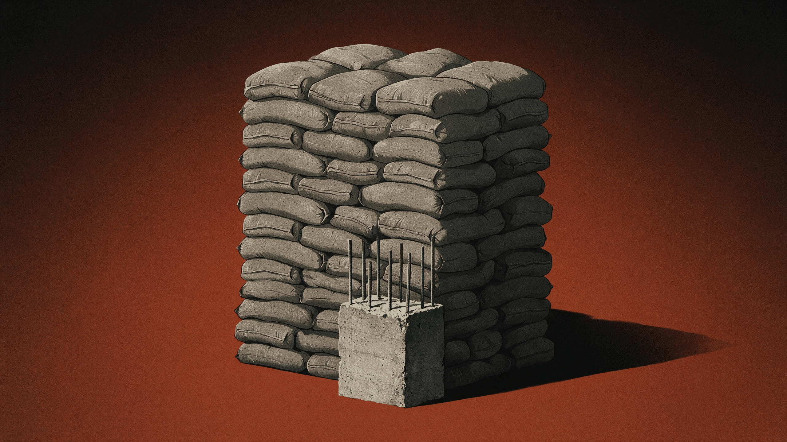
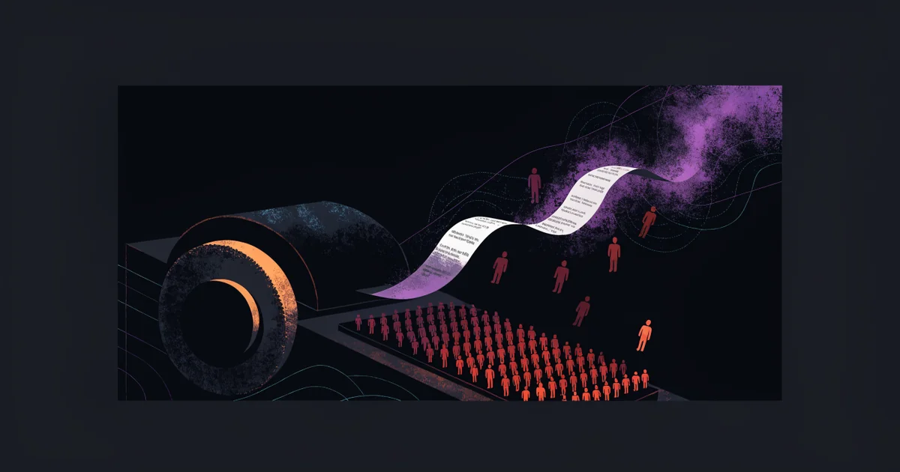
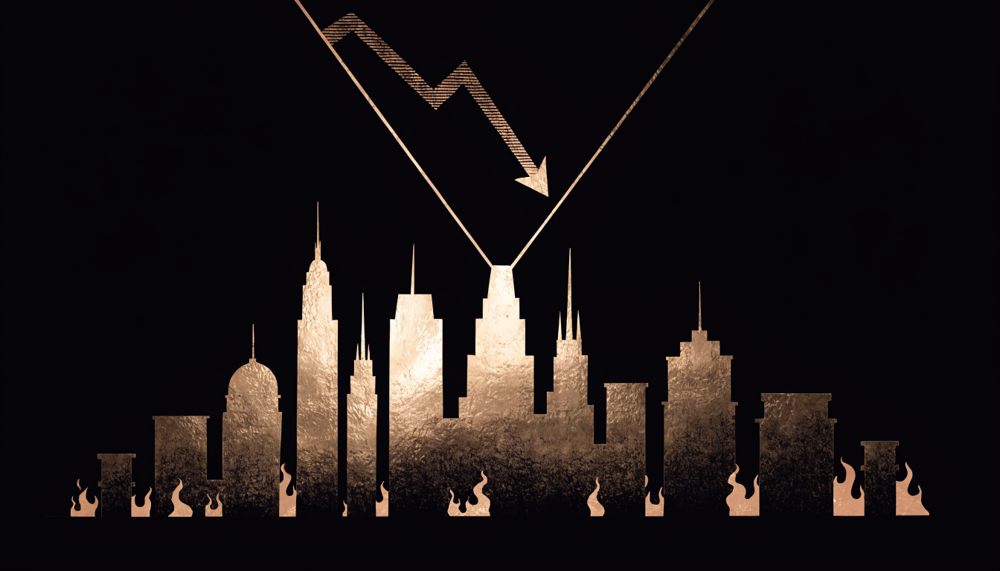
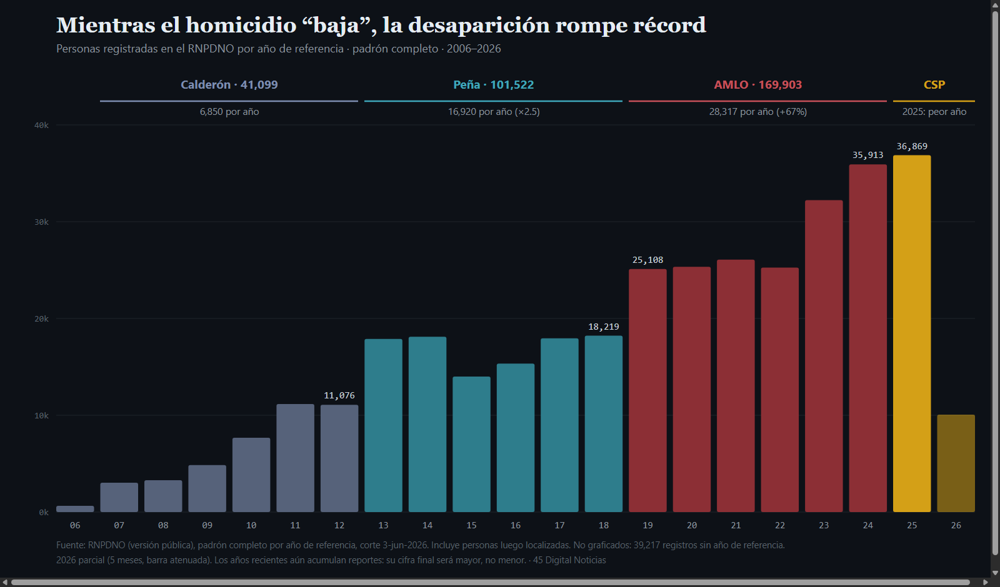
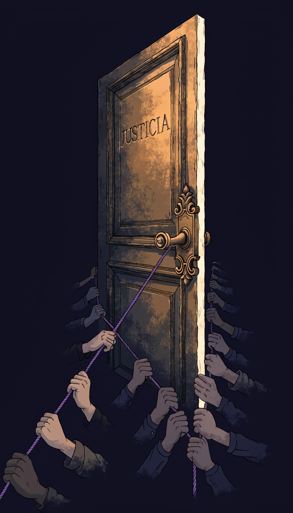
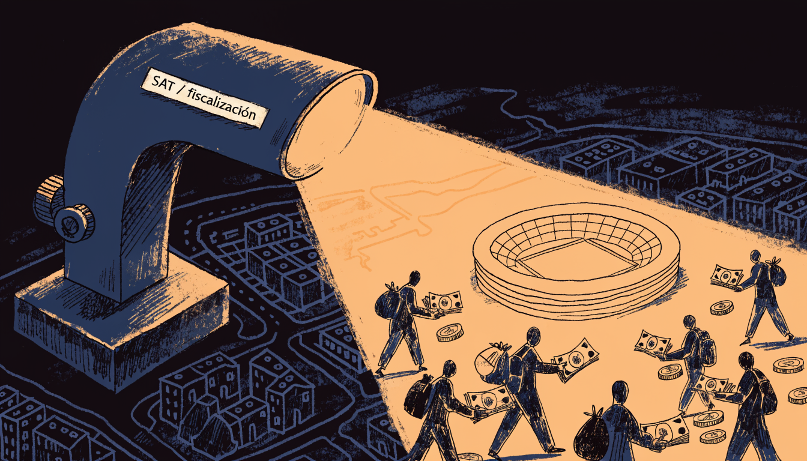
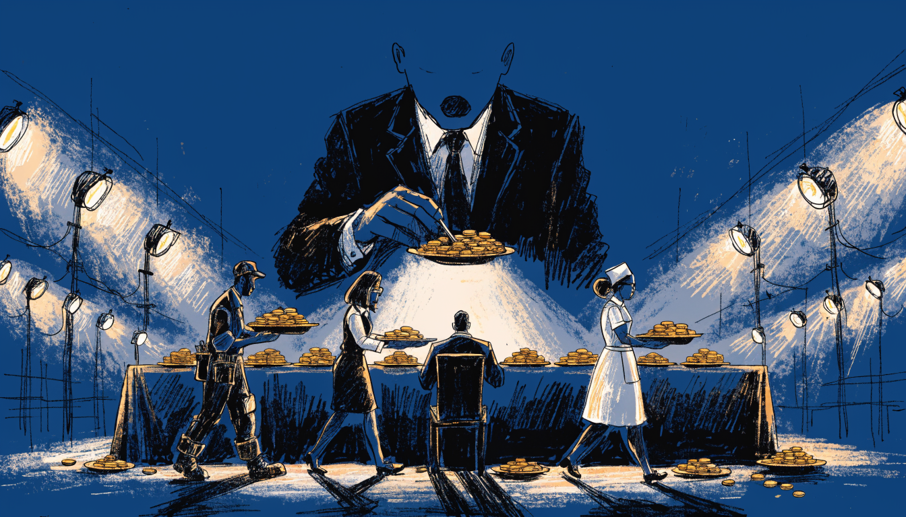
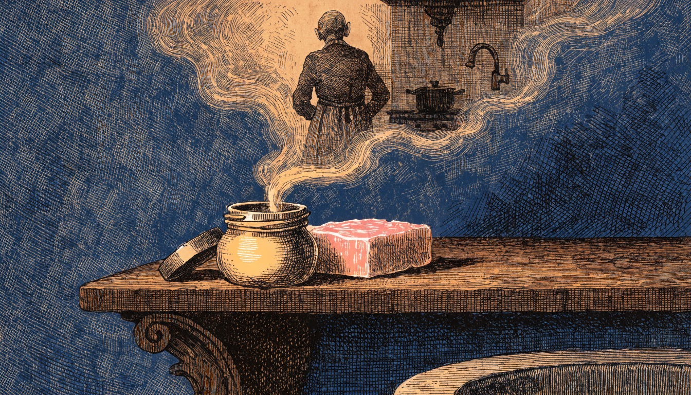
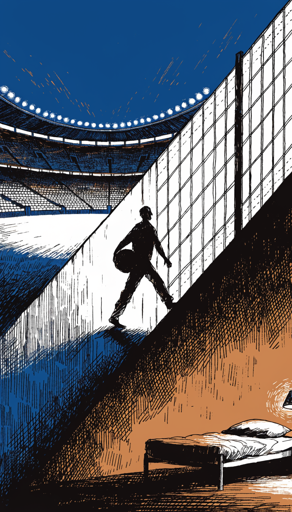
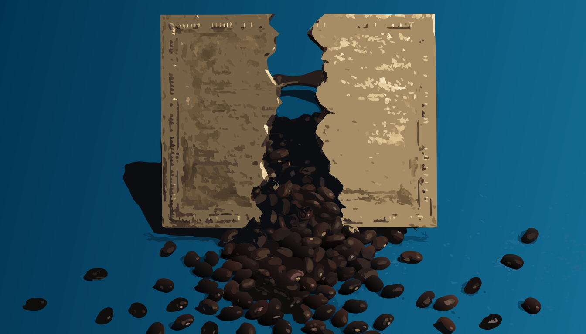

Últimas columnas
Ver todas →Cero pesos, diez millones
Cuautla declaró doce veces que no gastó un peso en difusión. Su cuenta pública dice que pagó 10 millones 235 mil, y no identifica a un solo medio.
Leer →
No era solo la basura
Cuautla gastó el doble en material, la mitad en obra, y cerró el año con 8 millones en el banco debiendo 157. La basura no era la excepción: era el ejemplo.
Leer →Cincuenta millones y ni una palabra
Cuesta 50 millones al año, documentó 165 auditorías, y en sus informes la palabra sanción aparece cero veces.
Leer →La cuenta de la basura
Cuautla paga casi un millón al mes por su basura, a una persona física y sin contrato a la vista. Presupuestó 5.9 millones y pagó 13.7. La basura no se duplica en un año.
Leer →La nube tiene dueño
Crees que tus datos 'suben' a la nube. Bajan al fondo del mar, por un cable del grosor de una manguera. Y en México, el principal de esos cables es de una sola empresa: la de Carlos Slim.
Leer →Quién considera
El anteproyecto no prohíbe ningún contenido. No le hace falta. El que se queja puede no probar nada, el medio está obligado a producirlo todo en cinco días, y la multa por lo que dijo la ejecuta el SAT.
Leer →El pasado que se sienta en la tesorería
El dinero que las familias pagan por el agua aparece del lado de quienes controlan la caja del municipio. ¿Debe auditar el pasado quien figura en él?
Leer →El semestre que subió
Presentaron a Morelos como un éxito: bajó el homicidio, bajó el robo, bajó el feminicidio. Cada número es cierto. El truco está en cuáles enseñaron, porque el total del semestre subió y la extorsión se duplicó.
Leer →El mapa que ves está mal a propósito
Groenlandia parece del tamaño de África en el mapa de tu salón. En realidad, caben 14 Groenlandias en África. El mapa con el que creciste infla al norte y encoge al sur, y no es casualidad.
Leer →El mercado de nadie
Un mercado que se ha reconstruido muchas veces en los boletines y ninguna en el terreno: el dinero cambió de manos entre tres gobiernos y ninguno lo entregó.
Leer →La medicina que no llegó
Se centralizó la compra de medicinas para eliminar el sobreprecio, y el sobreprecio apareció igual, bajo un solo techo. La mitad del cuadro básico se quedó sin proveedor, y quien paga es el niño cuya quimioterapia no llegó.
Leer →La aduana de verde olivo
El argumento para militarizar las aduanas fue la incorruptibilidad. Los expedientes van en sentido contrario, y la respuesta no fue devolver la lupa: fue concentrar más mando y menos luz.
Leer →Los 10,000 pasos que te vendieron
Cada noche revisas si llegaste a los 10,000 pasos. Ese número no salió de un laboratorio, salió de un anuncio japonés de 1965. Y la ciencia dice que el beneficio se aplana mucho antes.
Leer →El chupacabras no chupaba cabras
En 1995 un monstruo desangraba cabras de Puerto Rico a Sudamérica. Resultó que había salido de una película, y que llegó puntual a la peor crisis económica. El chupacabras no chupaba cabras: chupaba angustia.
Leer →La naturaleza que inventamos
Nos asusta el transgénico del laboratorio, pero comemos sin parpadear organismos que el ser humano lleva 9,000 años reescribiendo a mano. Lo que llamamos natural, en el súper, es el invento más viejo que existe.
Leer →El arresto y la marea
Detuvieron al alcalde de Cuautla, acusado de extorsión, y presumen que por eso bajaron los homicidios de Morelos. Pero un municipio no baja a un estado, y un arresto no es una marea.
Leer →La paz prestada del Mundial
Presumen que el homicidio cayó 48%, pero cerraron la cuenta en el mes del Mundial. La paz que se va con los aficionados no era paz: era hospitalidad.
Leer →El tren que trae lo que no debería
El huachicol no bajó. Se subió al tren, se puso el saco de un embarque legal, y cruzó por la puerta principal.
Leer →El doctorado de cortesía
La nueva secretaria de Cuautla se ostenta 'Doctora en Derechos Humanos'. La SEP dice otra cosa: su grado máximo es la maestría. El 'doctorado' es honoris causa, y un honoris causa no es un grado.
Leer →El robo que se llama vandalismo
El robo al tren no bajó tanto como dice el número. Cambió de nombre: se llama vandalismo. Y en el tablero que mira el ciudadano, se llama nada.
Leer →La casa siempre gana
El Mundial se volvió un casino y la casa es la FIFA. No necesita hacer trampa: pone las reglas, sienta a todos a la mesa y cobra cada mano.
Leer →El municipio que copió al crimen
El crimen fabrica el problema, infla el costo y vende la salida. Según la denuncia, ese mismo truco ahora se cobra desde una presidencia municipal, con logotipo.
Leer →El peaje del Tren Maya
El homicidio bajó en la vía del Tren Maya, pero la extorsión subió 48% y el narcomenudeo 86%. La firma no es matar, es cobrar.
Leer →Messi, Cristiano y el empate que vale más que la copa
¿Por qué llevamos quince años sin poder decidir quién es el mejor? Porque a dos corporaciones les conviene que nunca lo decidamos. La rivalidad Messi-Cristiano como empate de ingeniería.
Leer →La incertidumbre es una tecnología política
'Hay incertidumbre' suena a clima. Casi siempre es una herramienta, con dueño y con precio. En el T-MEC, no firmar el trato es la jugada, no la indecisión.
Leer →El último cerrojo
Un dato que nadie cuenta: en casi un siglo de Mundiales, el arco campeón varonil ha sido territorio de un solo color. Y 2026 tiene su primera grieta.
Leer →La tormenta perfecta no viene por donde truena
El mapa completo del riesgo, con los datos al día: la tormenta es real, pero no viene por donde truena.
Leer →El dólar más honesto
El dinero más honesto que entra a México terminó siendo el más gravado y el más vigilado. Zelizer y la doble marca sobre el billete del migrante.
Leer →La rebaja del 45%
El 45% es verdadero, pero es el descenso más favorable de varios posibles. La bolsa espejo donde el delito pudo cambiar de casilla.
Leer →La nube tiene sed
La nube no flota: tiene dirección postal en Querétaro y tiene sed. Kate Crawford y el greenwashing del 'sin agua'.
Leer →La aritmética del poder
El poder no inventa la cifra: elige el punto de partida que la vuelve cierta. Cuatro casos cotejados y un solo antídoto: el documento.
Leer →Una captura no es una prueba
Una página de Facebook acusa sin pruebas y un medio lo vuelve titular. La prueba es un escrito sin acuse de un juicio sin resolver.
Leer →Quien decide las dudas
Casi ningún congreso aplicó la reforma electoral. El vacío no es descuido: manda las elecciones cerradas de 2027 al tribunal.
Leer →El sobre amarillo y el Castillo
Tres instituciones cerraron el caso de los sobres con efectivo de los hermanos del expresidente. La ausencia de huella se volvió el escudo.
Leer →Dos cobradores en la misma vía
El homicidio subió 72% sobre la ruta del Tren Interoceánico mientras el país bajaba. La violencia siguió a la vía, no a la pobreza.
Leer →El banco que se audita en inglés
La CNBV multó al Banco del Bienestar por controles de efectivo débiles. El monto es una migaja; el contexto, no: quien vigila el lavado está en Washington.
Leer →El partido que no televisan
El G7, la Fed, Banxico y la OTAN sesionan dentro del calendario del Mundial. La ventana de distracción existe, está medida y se ha usado.
Leer →
México 86: profesionalizamos la fiesta, no la casa
Aprendimos a montar una fiesta de primer mundo; la casa, la institución, sigue pendiente. El 86 leído con Debord.
Leer →
Cómo leer Inseguridad México
El mapa de temperatura, los 55 delitos de tu estado y las bolsas espejo: la guía del expediente que nadie más ha construido.
Leer →
El −62.8% de Morelos
El anuncio del secretario García Harfuch sobre Morelos, auditado con los archivos del SESNSP, INEGI y RNPDNO.
Leer →
−40% homicidio doloso nacional
La baja del 40% anunciada por el Secretariado, cruzada contra las desapariciones que corren en paralelo.
Leer →
La aritmética que reduce sin encontrar
El padrón RNPDNO antes y después de la reforma: 134,779 personas activas y un método que resta sin buscar.
Leer →El Ángulo Conveniente
Anatomía de una narrativa numérica: cuando el homicidio baja, esto sube.
Leer →Reactivación RNPDNO
El anuncio presidencial sobre el registro de desaparecidos, auditado contra el padrón pre y post reforma.
Leer →Cuatro cifras y un relevo
Morelos relevó a su jefe de seguridad por el alza de violencia y, cinco semanas después, presumió una baja de 62.8 por ciento. La misma baja, contada de cuatro formas.
Leer →
El Gotham que no cuadra
El homicidio no cayó 46 por ciento: el truco está en la ventana, las etiquetas y el promedio. La baja real es 8.6 por ciento.
Leer →El cosmos en preventa
SpaceX salió a bolsa en la mayor IPO de la historia y valúa en billones un Marte sin ingresos. El cosmos, leído con Polanyi.
Leer →La víctima ilegible
En Cuautla casi todos se dicen víctima. No poder saber quién dice la verdad es justamente lo que el crimen necesita.
Leer →La silla del acusado
Piden destituir a dos alcaldes por no pagar pensiones. Decidirán 20 diputados: 10 fueron alcaldes.
Leer →
La cifra-trofeo
Los homicidios sí bajan, pero no 49 por ciento: el truco está en la ventana y en quién cuenta. Tres varas para un mismo país.
Leer →
La paz que no cuenta
Mientras el homicidio baja, 2025 rompió el récord histórico de desaparecidos. La violencia no se acabó: cambió de registro.
Leer →Morelos, subcampeón nacional
Primer lugar nacional en extorsión, segundo en homicidio y feminicidio. Cuando todo el país baja y tú no, el problema no es la marea.
Leer →
El impuesto del miedo
El único delito de alto impacto en récord histórico mientras todo baja. Hay dos SAT en este país; solo uno emite facturas.
Leer →
¿Qué estado quieres auditar?
55 delitos, 32 estados, 11 años y un detector de reclasificación: el tablero para auditar a tu estado sin creerle a nadie. Ni a nosotros.
Leer →La renta del recuerdo
El anuncio estelar del videojuego en 2026 es un juego de 1998. El recuerdo, detrás de una caseta de cobro.
Leer →
La justicia se arranca
El expediente de un feminicidio solo avanzó cuando la familia lo empujó. La justicia que se paga con presión.
Leer →
La zona ciega
La exención a la FIFA no solo perdona impuestos: la releva de declarar. Se apaga la vigilancia.
Leer →La fe pública no se hereda a dedo
Zacatecas quitó el examen para ser notario y abrió la designación a dedo: la captura del Estado.
Leer →
El Mundial al revés
México pone el gasto y el riesgo; la FIFA, exenta, se lleva la renta. ¿Derrama hacia dónde?
Leer →La indignación selectiva
Nos moviliza el horario de salida, no lo que se enseña. La escuela cambió de fondo sin debate.
Leer →
Cuota de memoria
El Zote y la Pomada viven en la memoria sin publicidad. Cuando el gigante no puede fabricarla, la compra.
Leer →Cien por ciento, salvo el motor
El Olinia, "cien por ciento mexicano": el emblema llegó antes que la industria que lo justifica.
Leer →Donde no hay hambre
Morena lo tiene casi todo y aun así perdió Coahuila 16 a 0. Lo que el dinero federal no compró.
Leer →
Dormir en Tijuana
Irán juega el Mundial en EE.UU. pero duerme en México: la hospitalidad condicional en la frontera.
Leer →
El rey de ratas
El poder en turno como un nudo de colas: nadie puede zafarse sin desgarrarse.
Leer →
Sabios solo cuando aplauden
La consulta como rito: se vota para que no se note que ya votaron por ti.
Leer →Cuando los enemigos cobran del mismo barril
Quién factura en cada disparo, y por qué tu Afore es socio silencioso.
Leer →
El día que se cerró el círculo
El 7 de abril, dos hechos que nadie juntó: Fink en Palacio y la ley que abrió tu Afore.
Leer →Cuando el legalismo es coartada
El estándar de prueba que se mueve con la cercanía política, no con la gravedad del hecho.
Leer →El truco del "Estado de Derecho"
La ley que te frena y la ley que te firma. ¿Quién decide qué es legal?
Leer →
La pastilla de Kelley
La advertencia de Núremberg que sigue vigente: el mal no es excepcional, es reproducible.
Leer →
Pantalla cautiva
2020 montó la infraestructura de la cautividad; 2026 le da contenido.
Leer →
La marcha de los veinte mil
200 mil convocados, 20 mil llegaron. La marcha como clip editado.
Leer →
La tormenta del frijol
El precio garantizado roto, la represión y la crisis orgánica.
Leer →
Pintando lo que no se ve
El feminicidio que se presumió y se revirtió, y la opacidad del registro de desaparecidos.
Leer →El timo de la transparencia
Antes se llamaba encubrimiento. Hoy se llama transparencia: el INAI y el IMIPE, vaciados.
Leer →Cobran por existir
La Operación Enjambre y la persecución penal selectiva. La pregunta: ¿quién quedó libre?
Leer →El amparo del silencio
El amparo como omertà: blindar no a la persona, sino a lo que sabe.
Leer →El soldado con boleta de multa
La Guardia Nacional militar cobrando la multa de tránsito. No es tránsito: es régimen.
Leer →Cerrar el círculo
Tres votos: cerrar la entrada, blindar al árbitro, reservarse anular el resultado.
Leer →El color de la seguridad
La capital de morado y luego de amarillo: el mito pone un color donde debería haber una pregunta.
Leer →La corte del pueblo ampara a un banco
La Corte electa no se puso del lado del banco: del lado de la facultad de bloquear.
Leer →El banderazo bajo la lluvia
La ciudad se inunda y el operativo aparece a achicar agua. El espectáculo de la prevención.
Leer →Carne de coartada
El greenwashing de Burger King: la redención climática asada sobre la grasa de la res.
Leer →El corrido apócrifo
Una "banda" sin músicos al millón de oyentes: el streaming, la IA y lo que tu suscripción financia.
Leer →